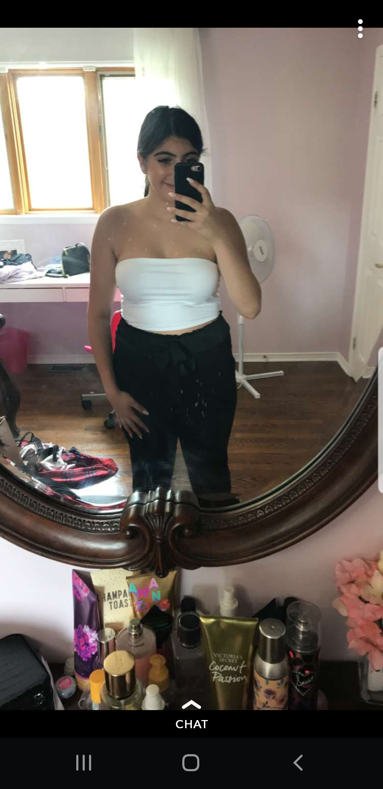

The beginning to a better life...
Where do I even start. First of all I am not creative like you are so I will express my love for you the way I can and know how to. This picture right, is Where my life changed, this right here is when I finally became the happiest I could ever be. From going the Fairview with Bianca and trying to figure out how to ask you out properly, to going to her house and making a poster, those were the best moments of my life. Every single seconds leading up to this moment was felt with joy and happiness. I honestly can't tell you what I was feeling, it was something that I havent felt before. Anyways fast forwarding to me arriving at your house and making you think that we are going for a nice dinner and you dressed all cute and all, wearing that beautiful pink shirt. As I was hiding in the trunk, my heart was racing every step you took closer towards the trunk. Finally I get to ask the most beautiful, sweetest, caring girl in world. Someone that puts someones needs before hers, someone who drop everything and go help a person. This the person I needed in my life, a person that has such a golden heart, someone that is literally sent by god himself. The smile that I got on my face when you said yes, I dont think Ive smiled like that before or ever felt something like that before ever. The happiness you gave me, the joy that filled me up, the warm feeling inisde of me, all of that because of you, because someone so perfect became mine. Well of coure I didnt ask you out your brother asked you out for me, but hey we will say I asked you out. You know the first time we ever talked, I felt so comfortable with you, I felt myself with you I just felt that connection with you that I havent felt with anyone before. You know you became such an important person in my life that without you in it its like the earth without the sun, the galaxy without the stars. You complete me in ways that I cant even describe, you are my other half, you make up the other half of me. There is not a better feeling waking up and going to sleep knowing that I have you, knowing that I love you, knowing that this perfect person belongs to me. You know if someone came up to me and told me you can have anything in the world, anything you desire, but I have to give you up, with no hesitation and no doubt I would be like okay deal. I want $100 billion (JK)with no hesitation and no doubt I would say the only thing I want is my sweet girlfriend Arianna. No matter what we go through no matter what you do, my heart will always choose you. This is how you made me feel when you said yes, and from that moment on, you just made me feel more and more myself, more happy. You literally changed my Life with just one word "YES" and I will never ever forget how you made me feel that day.
Where it all started
Lets go back a bit to where to it all started. The place where I start realizing what I have infront of me. It took me some time but at the lake of George Town I knew I wanted to be with you. I knew that I want to hold you, and kiss you, and love you. When we were at the lake and I was holding you so you dont finally I just used that as an excuse to hold you, and be close to you. I did want to kiss you badly but it just didnt feel right yet. When I was asking you to sit next to me during the plays I genuily wanted to be next to you, to be close to you but I was too scared to tell you how I felt. At first I wasnt too sure about you, I came from rough past relationships and I was questioning my self if its worth getting into another one, but something about you made me feel different, something about you made me feel like I can fall in love with you and not get hurt something about you made me feel so alive, and honestly I do not regret any second that I spend with you and spend loving you. Starting off as friends first, then becoming bestfriends and then falling in love with eachother, thats just a love story anyone would die for. We had something so special going on as friends, but right now we have something so much better and honestly I do not regret a single bit of our friendship and relationship. You were a really great friend to me, even though I was always mean to you in a friendly way and that time where I pulled that prank that I cant be your friend anymore(To that day, its still the funniest prank Ive pulled on you, and there are more coming). But honestly I am so glad that I got to be on the same bus as you, and Im glad we went to that lake, because that was the time that I realized I want you.


Youre number one fan...Always
I am your biggest fan baby. I would always come to your games and always cheer you on even though you lost maybe like 3/4 of your game, but thats okay I still came even though I knew you would lose, I was always there supporting my amazing wondeful girlfriend. No matter what youre doing, which sport you are playing I will always be your biggest fan. For me it doesnt matter what you are doing, wether you winning or losing, wether youre failing or passing, in my eyes you will always be a superstar, my superstar and I honestly couldnt be more prouder than having such an amazing girlfriend. I honestly never would of imagined that I will be you number one fan. Im your biggest fan ill follow you to the end.
Best Date Ever
WOW! Where do I even begin. This past two years we had so many dates, picnicks,dinners,lunches,birthdays,paddle boating, concerts, marathons,shows, weeding, laronde, and more marathons, and more marathons, movies, stay at home dates, spa, PROM. I honestly couldnt be more honored to have such a beautfiul amazing date every single time. Youre the greatest date anyone could ever wish for. you are so beautiful that every time I look at you I just see pure beaty and greatnes every second that passes not looking at you it just feels like im wasting my time. In a room full of art or models, youll still be the most beautiful thing in the room Everytime you walk into a room you make it so much brighter. My heart just melts looking at you. At prom you completely slayed it. You were the most gorgeous queen out There no one could even compete, that sparkly dress, those beatiful eyes, and that great smile, just wow, I honestly almost cried when I saw you. I couldnt believe my eyes what beauty you posses. The wedding you absoultely looked stunning, when you walked in the hall I shed a tear or two on how beautiful you looked, like WOW I got my self the hottest most beautiful girl in the entire universe. Not only youre beautiful on the outside, but you are beautiful on the outside as well. Your inner beauty is something i have never seen before. You have a pure gold heart, with good intentions, your personality is out of this world. I honestly couldnt be more happier dating you, a women that is so beautiful in any way shape or form, never forget that, never ever let anybody tell you otherwise.


Sometimes you can be a bit... Weird
I honestly love you to death and youre an amazing human being, but sometimes you can be just a bit weird. We both gotten so comfortable with eachother that we can be 100% ourselves and be scared to be judged. Sometimes I look at you and im like WOW this girl is freaking gorgeous but then there is days where I look at you and I am like what is that, is that even human. Sometimes the things you say, or do can be so dumb or even disgusting, but you know I got myself into this and now I have no choice but to love you with all my heart for all your weird things. You really are beautful but sometimes the sound that come out of your body make me question you, making me question whether i made the right decision. Sometimes I even look at you and feel like youre the most digsuting human being I have ever met, but I still love you with all my heart.
Greatest pictures of
my beautiful girlfriend
